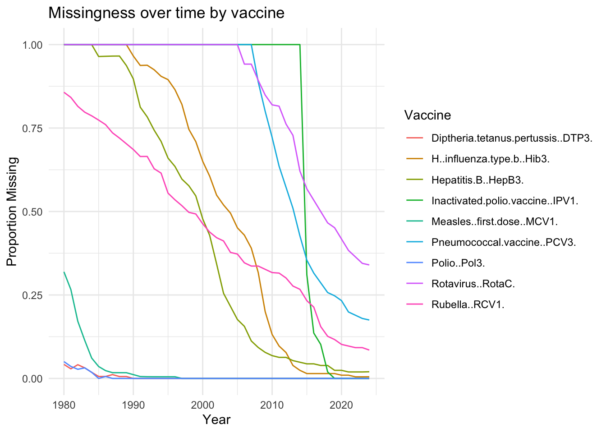

| Entity | Code | Year | Hepatitis.B..HepB3. | H..influenza.type.b..Hib3. | Inactivated.polio.vaccine..IPV1. | Measles..first.dose..MCV1. | Pneumococcal.vaccine..PCV3. | Polio..Pol3. | Rubella..RCV1. | Rotavirus..RotaC. | Diptheria.tetanus.pertussis..DTP3. | |
|---|---|---|---|---|---|---|---|---|---|---|---|---|
| Length:9203 | Length:9203 | Min. :1980 | Min. : 0.00 | Min. : 0.00 | Min. : 0.00 | Min. : 0.00 | Min. : 0.00 | Min. : 0.00 | Min. : 0.00 | Min. : 0.00 | Min. : 1.0 | |
| Class :character | Class :character | 1st Qu.:1993 | 1st Qu.:73.00 | 1st Qu.:73.00 | 1st Qu.:77.00 | 1st Qu.:68.00 | 1st Qu.:64.00 | 1st Qu.:71.53 | 1st Qu.:78.00 | 1st Qu.:46.00 | 1st Qu.:71.0 | |
| Mode :character | Mode :character | Median :2003 | Median :89.00 | Median :90.00 | Median :92.00 | Median :86.00 | Median :84.00 | Median :88.00 | Median :91.00 | Median :74.00 | Median :88.0 | |
| NA | NA | Mean :2003 | Mean :78.97 | Mean :78.73 | Mean :83.58 | Mean :78.19 | Mean :73.66 | Mean :79.71 | Mean :78.66 | Mean :63.83 | Mean :79.3 | |
| NA | NA | 3rd Qu.:2014 | 3rd Qu.:96.00 | 3rd Qu.:96.00 | 3rd Qu.:98.00 | 3rd Qu.:95.00 | 3rd Qu.:93.00 | 3rd Qu.:95.03 | 3rd Qu.:96.00 | 3rd Qu.:88.00 | 3rd Qu.:95.0 | |
| NA | NA | Max. :2024 | Max. :99.00 | Max. :99.00 | Max. :99.00 | Max. :99.00 | Max. :99.00 | Max. :99.00 | Max. :99.00 | Max. :99.00 | Max. :99.0 | |
| NA | NA | NA | NA's :3559 | NA's :4439 | NA's :7146 | NA's :155 | NA's :6943 | NA's :24 | NA's :3722 | NA's :7484 | NA's :29 |
Initial Exploration
Description of Dataset
Vaccination Coverage, World, 1980 to 2024
The dataset our group chose to explore is the Vaccination coverage, World, 1980 to 2024 data, published by Our World in Data. It tracks the share of one-year-olds who have received each of nine routine childhood vaccines, reported every year from 1980 to 2024 for almost every country in the world. The underlying numbers come from WHO and UNICEF’s joint immunization estimates, with population data from the UN.
Why we chose this dataset
We picked this dataset for the following reasons:
- Public-health relevance. COVID-19 was not that long ago, so public health and vaccination still feel relevant to almost everyone. Childhood vaccination is also one of the most cost-effective health interventions in modern history, and most readers have either been vaccinated under these schedules themselves or have young relatives who are right now. Between recent outbreaks worldwide, the topic still frequently pops. up in the news.
- Lots of interacting variables to explore. The dataset combines many countries, several different vaccines, and 45 years of time, which means there are a lot of angles we can dig into. We already had some questions in mind before we started, such as whether certain diseases are more prevalent in some regions of the world than others, or whether vaccination coverage might correlate with a country’s GDP, healthcare spending, or level of conflict. Having all of these variables sitting next to each other gives us the chance to actually test those ideas with the data instead of just speculating about them.
- Good fit for visualization. The data is long, spanning 45 years, and wide, covering multiple vaccines across roughly 200 countries. That means it can support many different chart types, including time series, small multiples, choropleth maps, and ranked bars, and it naturally invites a story arc that moves between the global picture and country-level detail. It also feels both varied and sufficient, so we are confident we will not run out of material before our final submission.
Structure of the data
The file we are working with, global-vaccination-coverage.csv, has 9,202 rows and 12 columns. Each row is one observation for a single entity in a single year. The columns break down as follows:
| Column | Type | Description |
|---|---|---|
Entity |
character | Name of the country or region, for example "United States", "World", or "South Asia (UNICEF)". 218 unique entities total. |
Code |
character | ISO alpha-3 country code, for example "USA". Blank for the 7 grouping rows. |
Year |
integer | Calendar year of the observation, ranging from 1980 to 2024. |
Hepatitis B (HepB3) |
numeric, % | Share of one-year-olds who received three doses of the hepatitis B vaccine. Date range: 1985–2024. |
H. influenza type b (Hib3) |
numeric, % | Share of one-year-olds who received three doses of the Haemophilus influenzae type b vaccine. Date range: 1990–2024. |
Inactivated polio vaccine (IPV1) |
numeric, % | Share of one-year-olds who received the first dose of the inactivated polio vaccine. Date range: 2015–2024. |
Measles, first dose (MCV1) |
numeric, % | Share of one-year-olds who received the first dose of a measles-containing vaccine. Date range: 1980–2024. |
Pneumococcal vaccine (PCV3) |
numeric, % | Share of one-year-olds who received the third dose of the pneumococcal conjugate vaccine. Date range: 2008–2024. |
Polio (Pol3) |
numeric, % | Share of one-year-olds who received three doses of either oral or inactivated polio vaccine. Date range: 1980–2024. |
Rubella (RCV1) |
numeric, % | Share of one-year-olds who received one dose of a rubella-containing vaccine. In practice this is almost always the combined measles-rubella vaccine. Date range: 1980–2024. |
Rotavirus (RotaC) |
numeric, % | Share of one-year-olds who completed the recommended rotavirus vaccine schedule. Date range: 2006–2024. |
Diptheria/tetanus/pertussis (DTP3) |
numeric, % | Share of one-year-olds who received three doses of the combined diphtheria-tetanus-pertussis vaccine. Date range: 1980–2024. |
All nine vaccine columns are numeric percentages bounded between 0 and 100.
Things to be careful about
A few characteristics of the data that will matter for how we visualize it:
- The percentages are out of one-year-olds, not the whole population. Each value describes the share of children who turned one in that calendar year and received the vaccine, not the share of the country’s overall population. That distinction is worth keeping in mind whenever we describe a number for a non-technical audience.
- The “Entity” column mixes different levels. Most rows are countries, but some are larger groupings: six UNICEF regions like
"South Asia (UNICEF)", the income group"Middle-income countries", and a global"World"row. For any country-level analysis we will have to filter those grouping rows out, otherwise we end up averaging countries together with regions they already belong to and double-counting. - Different vaccines start at different years. The diphtheria-tetanus-pertussis, polio, measles, and rubella vaccines go back to 1980, but the pneumococcal, rotavirus, and inactivated polio vaccines were not tracked globally until much later, so those columns are mostly empty for the early years. A blank cell does not mean coverage was 0%. It usually means the vaccine was not part of the routine schedule yet, so we should leave those gaps as gaps in our charts rather than treating them as zeros.
- The 2023 and 2024 numbers are partly estimated. For countries that did not report on time, WHO extrapolates from previous years’ data, so the most recent two years should be read as best-available estimates rather than firm measurements.
Initial Exploration
For our initial exploration of the data, we conducted a brief exploratory data analysis involving summarizing the dataset information, searching for numerical correlations between numerical variables, seeing the nature of the NA values, etc.
Key insights from the summary output that stand out immediately are the following:
Polio (Pol3) and DTP3 are the most complete –> only 24 and 29 missing values respectively, meaning these are tracked nearly universally.
IPV1, Rotavirus, and PCV3 have massive gaps (7,000+ NAs), likely because these vaccines were introduced more recently
Median coverage across most vaccines hovers around 85–91%, but means are lower (78–84%), suggesting a skewed distribution where a subset of countries pull the average down
All vaccines max out at 99%, and minimums hit 0%, so there’s a full spectrum of coverage quality represented
We went more in-depth with the prevalence of NA values in our dataset, and the following graph illustrates the NA values over time:

In terms of viewing correlation between variables, the following observations were made about the dataset:
Very strong correlations (r > 0.90: DTP3, Polio, and HepB have high values of 0.96, 0.95, and 0.92. These are generally vaccines that have been administered together for decades, so countries that do well on one tend to do well on all three
Strong correlations (r = 0.70–0.90): Measles (MCV1) correlates strongly with DTP3 (0.87), Polio (0.86), and HepB (0.84), suggesting it follows the same national-level delivery infrastructure. Rubella (RCV1) is moderately-strongly tied to Measles (0.78).
Cluster patterns: generally clusters are either popularly administered vaccines such as Polio and Measles or newer vaccines
Communication Goals
Our prototype tells a four-beat story. Each beat is one communication goal, and together they form a narrative arc that moves from global progress, to inequality, to structural drivers, and finally to disruption and recovery.
1. Trace the dramatic rise in global childhood vaccination coverage over the past four decades
One of our primary goals is to communicate the dramatic long-term rise in childhood vaccination coverage worldwide from 1980 to 2024. Vaccines such as measles (MCV1), hepatitis B (HepB3), and rubella (RCV1), which once had limited or inconsistent coverage, now reach a large majority of one-year-olds in many countries. This trend is supported by the high median coverage values in our summary statistics and the strong upward patterns visible across vaccines over time. Through this goal, we want viewers to understand vaccination programs as one of the most successful public-health efforts in modern history while also comparing these long-term trends against international benchmarks such as the 90% coverage target.
2. Highlight inequalities in vaccination coverage across regions and countries
A second communication goal is to highlight the unequal distribution of vaccination coverage across different regions and countries. While global averages suggest strong overall progress, we expect substantial variation between countries with different levels of healthcare access, economic development, and public-health infrastructure. By comparing regional and country-level patterns, we hope to show that some parts of the world consistently achieve high vaccination rates while others continue to lag behind. This goal aims to help viewers look beyond global averages and recognize the geographic inequalities that still shape access to routine childhood immunization.
3. Explore how wealth, healthcare infrastructure, and economic and political conditions influence vaccination outcomes
Our third communication goal is to investigate how broader social, economic, and political factors may influence vaccination coverage. We are interested in exploring whether vaccination rates correlate with indicators such as GDP, healthcare spending, or levels of political instability and conflict. The strong correlations we observed between long-established vaccines such as DTP3, Polio (Pol3), HepB3, and Measles (MCV1) suggest that vaccination success is often tied to the strength of a country’s healthcare infrastructure rather than to isolated disease-specific efforts. Through this analysis, we hope to communicate that vaccination coverage reflects larger structural conditions related to development, governance, and public-health capacity and is heavily intertwined with inequality.
4. Examine how the COVID-19 pandemic disrupted global vaccination progress
Our final communication goal is to examine how the COVID-19 pandemic disrupted decades of global vaccination progress and how recovery patterns have differed across countries and vaccine types. We are particularly interested in identifying periods where vaccination coverage stagnated or declined and determining whether some regions recovered more quickly than others in the years following the pandemic. By comparing pre-pandemic and post-pandemic trends, we hope to show that even long-standing vaccination systems remain vulnerable to large-scale global disruptions. This goal will help frame vaccination coverage not as guaranteed progress, but as an ongoing public-health challenge that requires continued investment and resilience.
Putting it together. Together, these communication goals create a narrative arc that moves from global progress in childhood vaccination, to the inequalities and structural factors that shape coverage across countries and regions, ending with the disruptions caused by the COVID-19 pandemic. Through this progression, we hope to communicate both the remarkable success of global immunization efforts and the ongoing challenges that continue to affect vaccination access and stability worldwide.